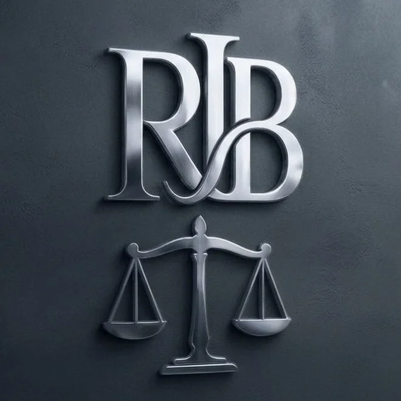

Accidentes de tránsito
Choques, atropellos y lesiones como conductor, acompañante, pasajero, peatón, ciclista o motociclista.
Consultar este caso →Accidentes de tránsitoLaboralesSalud
En el Estudio Jurídico RJB te acompañamos en reclamos por accidentes de tránsito, accidentes laborales y temas de salud, en la Ciudad y la Provincia de Buenos Aires.
I.
Choques, atropellos y lesiones como conductor, acompañante, pasajero, peatón, ciclista o motociclista.
Consultar este caso →Accidentes en el trabajo o en el camino de ida y vuelta, enfermedades vinculadas al trabajo y reclamos ante la ART.
Consultar este caso →Reclamos vinculados a tu salud y a la atención médica. Contanos tu situación y te decimos cómo seguir.
Consultar este caso →II.
Cuatro preguntas y nos llega tu consulta ordenada por WhatsApp. Así podemos orientarte más rápido.
Respondé y la balanza se equilibra.
Desde el día del hecho empiezan a correr tiempos legales para reclamar. Por eso conviene consultar cuanto antes, aunque todavía no tengas todos los papeles.
III.

IV.
Estudio Jurídico RJB, a cargo de la Dra. Erica Ramos Cabrera. Atendemos casos de accidentes de tránsito, accidentes laborales y salud en la Ciudad Autónoma de Buenos Aires y en la Provincia de Buenos Aires.
Si podés, sacá fotos, anotá los datos del otro vehículo, del seguro y de testigos, y hacé la denuncia. Guardá todo papel médico. Si no lo tenés todo, igual escribinos.
El trayecto entre tu casa y el trabajo puede considerarse accidente laboral. Contanos cómo fue y lo revisamos.
Sí. Atendemos casos en la Ciudad Autónoma de Buenos Aires y en la Provincia de Buenos Aires.
Nos escribís por WhatsApp, nos contás qué pasó y te decimos cómo seguir.